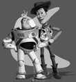
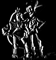
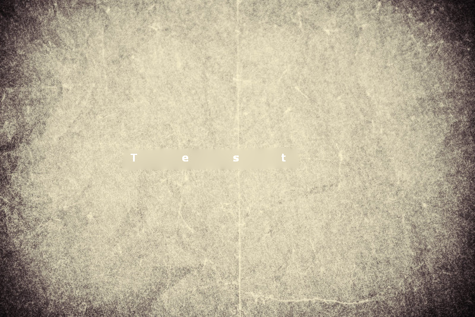
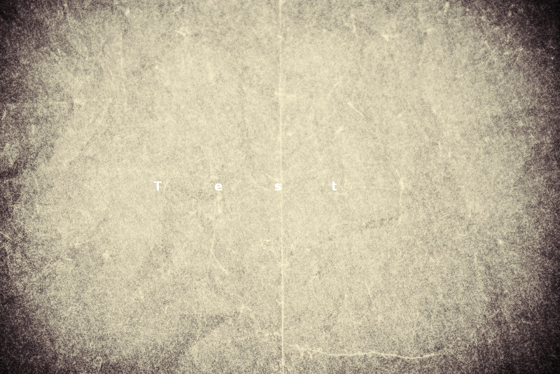

Project 2: Gradient-Domain Fusion
Toy Problem:
The reconstruction result is:

The reconstruction error is 1.057e-13.
The computed gradients for reconstruction is shown below (the left one
is for gradient in x direction and the right one is for gradient in y
direction):

If I encourage v(1, 1) to be similar with s(1, 1) + 1 instead of s(1,
1), then the error becomes 114.4 which is roughly the square root of
the image size. This indicates that each pixel increases its value by
1, which proves that the gradient domain reconstruction is doing the
right thing.
Poisson Blending & Mixed Gradients:
To test the correctness of the implementation, I tried a simple case:

|

|

|
|
|
|
Before Blending
After Blending
The blending result looks okay at a glance. But when looking
carefully, the texture around the penguine looks different with the
texture on the target image and we can see some vague boundary on the
left side.
 Before Blending
Before Blending
 After Blending
After Blending
Discussion:
I found that the border of each image causes a lot trouble, so I cut
off the border of each image (10%) to compute NCC scores based on only
the central part.
Extra Credit:
- Automatic cropping: There are usually white borders surrounding
each image. So starting from the outmost line, I cut off a line if the
minimum gray scale is larger than 200. The process stops once a line
does not meet the criteria. I repeat this process for all four
directions (up, bottom, left, and right). The result is as follows:

- Automatic contrasting: I apply the histeq function to each
channel and get results with more constrast:

- I explored a little bit about better color mapping and find that
multiplying 0.9 to red and green channels for this image leads to
slightly better result (the person looks more lively):

- I also tried using gradients and edges for alignment. I use Sobel
filtering for computing
gradients and Laplacian filtering for computing edges. While I didn't
observe much improvement as the alignment based on color metrics is
already pretty good.